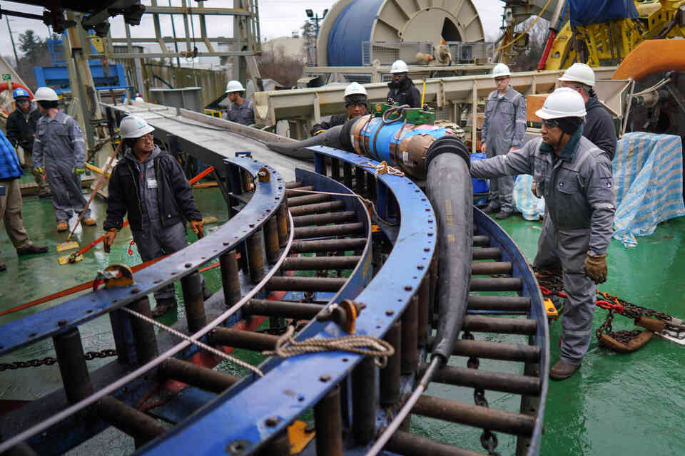

Internet backbone
Visual documentation assembled after reading Wired's article on Google and Facebook's internet subsea cables. These images are not specific to the cables backed by these two compagnies.

Internet cables undersea to connect land patches together are more numerous each year, yet they represent a huge infrastructural cost and are potentially very fragile. The map of the currentely deployed undersea data cables and their names is available through this dynamic interface.
The process of installing this infrastructure is quite interesting :
The Cable :
First off, the cables themselves are not so thick, but quite "engineered" compared to what we are accustomed to.
Structure :


They are built in a similar way compared to undersea short range power (+data) cables :


Manufacture :
Installation :
Carrier Ships :


Loading :

Unwinding :


Joining spool endings at sea :
When joining spools together, they need repeaters (that are powered with high voltage using the copper sheats used as fiber protective coat to provide the current).

